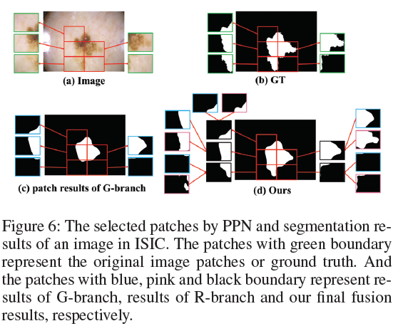

Patch Proposal Network for Fast Semantic Segmentation of High-Resolution Images
论文地址：https://ojs.aaai.org//index.php/AAAI/article/view/6926
Contribution
- PPN的目的是从普通的patches中选出重要的patch，它是一个具有较好评判准则的分类网络，他能够减轻训练负担并改善分割的结果。
- 对于超分任务，该篇研究将PPN嵌入全局细化网络（GRNet），并使用PPN来指导全局分支和细化分支之间的协作。
- 与最先进的方法相比，文章提出的GRNet在3个公开的高分辨率数据集上取得了最好的性能:DeepGlobe、ISIC和CRAG。特别是，该篇工作的方法在DeepGlobe上使用GPU实现了12.9帧/秒的帧率，因此，无论在速度还是在精度上，它都是一种实用的分割方法。
- PPN具有良好的泛化能力。它可以很容易地直接集成到其他流行的语义分割框架中。PPN提高了baseline语义分割网络的分割性能。
Related Work
对多尺度上下文信息的融合，可以让我们得到了较好的分割效果。RefineNet增加了一个多路径细分块，在不同的层次上递归利用多尺度特征。特征金字塔网络(Feature Pyramid Network,FPN) 利用多尺度语义信息，通过自上而下的不同层次融合机制实现预测。
此外，上下文聚合在分割方法中起着重要的作用。DeepLab采用了扩张型卷积和空洞空间金字塔池化模块（atrous spatial pyramid pooling module）来帮助扩展感受域，有利于更好地将全局上下文聚合为细粒度特征。PSPNet采用金字塔汇聚模块，将不同区域的上下文信息聚合起来，提高了捕获全局上下文的能力。
此外，出于实时性和低延迟的目的，追求快速或实时的语义分割模型越来越受到人们的关注。ICNet 采用级联特征融合机制，利用低分辨率信息和高分辨率图像的细节来细化分割预测。BiSeNet构建了两条路径，一条是负责获取空间信息的空间路径，另一条是实现较大接受场的上下文路径，然后利用特征融合模块将两条路径的输出进行整合。虽然这些实时分割网络具有较低的计算复杂度和内存消耗，但它们的分割精度远远低于其他网络。
Proposal Method
The Architecture of GRNet
下图显示了GRNet的架构。GRNet包含三个组件:全局分支(g分支)、PPN和细化分支(r分支)。将下采样图像输入G-branch和PPN。利用G-branch生成下行采样图像的初步全局分割特征。PPN选择重要的补丁。然后由G-branch和PPN引导R-branch对所选patch的分割进行细化，即特征提取和细化。然后，融合全局层次特征和细化的局部特征生成最终的分割。下面我们将详细介绍PPN的运行机制、特征提取和细化以及特征融合。
PPN
PPN是一个独立的网络，作为一个选择器。在测试阶段，PPN在没有监督的情况下进行选择。因此，PPN必须在训练阶段学习选择规则。受到老师教学的启发，如果老师想要提高小组的平均成绩，一个更简单的方法是提高低于平均成绩的学生的成绩。因此我们采用类似的判别选择规则来指导PPN进行patch选择。当遇到当前特征的分割得分$I_{c}$低于全局平均分数$I_{t}$的时候，该特征块将会被选择并记录为1，具体公式如下所示。这里，以G-branch中得到的均值对并集的交(mIoU)作为分割分数的度量。
先将H×W超分图$I$下采样为$I_{g}$，并平等地划分成N个不重叠的patches，然后将$I_g$喂进全局分支获得特征$F^G$,然后用划分$I_g$的方法去划分$F^G$。
PPN是一个分类网络，其体系结构如图3所示。将下采样图像$I_g$送入PPN的主干中，提取深层特征$F^B$，平铺成特征patch $\{ {F^B_i}\}^N_{i=1}$。然后通过平均池化层对$F^B$和$F^B_i$进行处理，再通过全连接层得到全局得分$G_{score}$和patch得分$P_{score}$。然后将$G_{score}$与各$P_{score}$的差值输入sigmoid函数进行预测，预测结果形成flag map，其中值1表示预测概率≥0.5，值0表示预测概率<0.5。我们将二进制交叉熵(BCE)损失用于PPN，这是训练一个二元分类网络的标准实践。
Feature Extraction and Refinement
根据PPN的flag map，自适应地从G-branch中选取特征patch$F^G_i$和对应位置的原始图像$I$的patch$P_i$，使G-branch和R-branch协同工作。为了细化patch分割，首先将$F^G_i$放大到$P_i$的大小。我们在放大后的$F^G_i$上执行类似于(Yu et al. 2018b)的显著性操作，并将结果与$P_i$进行元素逐点相乘，得到显著性图像patch，并将显著性图像patch送入R-branch。分支输出改进的patch分割$F^R_i$。
Feature Fusion
为了准备一个简单而有效的融合机制来更好地融合来自G-Branch全局特征$F^G$和选中的来自R-Branch的局部特征,选中的地方特色从R-branch$F^R_i$,我们首先重塑特性映射$F^E$(初始化为0),将其变为与$F^G$一样的大小并均匀划分为$\{F_1^E,F_2^E,……,F_i^E,…,F_N^E\}$。如果第i个patch被PPN选中，那么改进后的特征$F^R_i$将会取代FE中的对应特征$F^E_i$。特别的是，在$F^G$中，选择的patch应与对应的patch融合，未选择的patch保持不变。最后,重建的$F$与$F^G$,然后连接结果送入聚合层包含三个卷积层:(3,3,256),(3,3,256),(1,1,Nc),其中(k, k, s)意味着卷积核是k×k×s，Nc是类别数量。
Overall Loss Function
Training
采用交替优化的3步训练方案。这里，将除PPN之外的网络定义为主体，包括G-branch、R-branch和聚合层，并将PPN作为选择器。G-branch使用以ResNet50 (He et al. 2016)为主干的FPN (Lin et al. 2017b)，R-branch使用以ResNet18 为主干的FPN。PPN使用没有最后一个残块的ResNet18 作为骨干。首先，我们微调训练G-branch来完成端到端全局分割任务。其次，我们在g分支输出的指导下对PPN进行训练。G-branch和PPN是两个独立的网络。最后，我们在R-branch中对分割进行了细化。在聚合层PPN的指导下，将细化结果与G-branch的输出进行融合。固定PPN调整主体。迭代进行交替训练，直到达到设定的迭代次数。
Experiment
Dataset
DeepGlobe：DeepGlobe (Demir et al. 2018)是一个聚焦于农村地区的高质量卫星数据集，提供了7类803幅图像，分辨率为2448×2448像素。我们将数据集随机分为训练集、验证集和测试集，分别为455、206和142张图像。特别地，七个类中的对象命名为unknown，在我们的实验中没有讨论。
ISIC：ISIC (schandl, Rosendahl, Kittler 2018;Codella et al. 2018)是一个用于色素皮肤病变的超分辨率医学数据集，其训练集包含2077张图像，验证集包含260张图像，测试集包含259张图像。ISIC的平均分辨率高达9 m，最大的图像尺寸为6748×4499。密集的注释包括两类:病变区域和背景。但由于背景比例较大，我们只选取病变区域进行评估。
CRAG：CRAG (Graham et al. 2019;Awan et al. 2017)是一个HRI数据集，包括两类并显示不同分化的腺形态。将CRAG数据集分为训练集和测试集，分别包含173和40张图像。平均尺寸1512×1516。
Cityscapes：Cityscapes (Cordts et al. 2016)是一种街景数据集，通常被常用的语义分割方法用于评价。其中包含3475张大小为2048×1024的精细注释图像，其中2975张用于训练，其余用于验证。有19个预定义的语义类，这19个类之外的对象在训练和验证阶段都将被忽略。
Ablation Studies

Comparisons with state-of-the-art methods
The generalization of PPN
Conclusion
这项工作提出PPN，在超分高分图像语义分割任务上更好地权衡分割精度，推理速度和内存使用。PPN嵌入到全局-局部框架中，选择重要的patch，并进一步细化。在DeepGlobe、ISIC和CRAG上的实验结果表明，该方法取得了最佳的综合性能。此外，PPN还可以嵌入到其他语义分割框架中，实验结果表明，PPN具有良好的泛化能力。